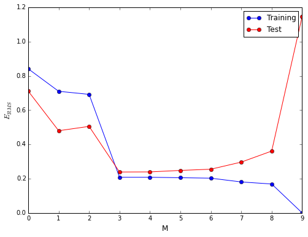

Title: IPython Jupyter Notebook
import numpy as np from numpy.linalg import inv import matplotlib.pyplot as plt from matplotlib import rc %matplotlib inline rc('figure', figsize = (8,6)) rc('axes', labelsize='large')
This series of notebooks serves as a working reference based on Pattern Recognition and Machine Learning by Bishop
Adaptive Model
-
Training Data
- Set of data
Target Vector
-
Training Phase - An adaptive model is given a training data set, during which the model parameters are changed to minimize a cost function
Generalization - Extending a trained adaptive model to new data
Feature Extraction - Reducing and/or processing a dataset to accelerate computation, while perserving valuable information
Classification - Method of assigning each input vector to a predetermined number of discrete categories
Regression - Where desired output consists of one or more continuous variables
Supervised Learning - An adaptive model is trained using a training data set containing the target vectors
Unsupervised Learning - Not providing a target vector while training a model in order to discover new categories Clustering - Discover groups of similar data Density Estimation - Determine the generating distribution of a dataset * Visualization - Project a higher dimensional dataset into a lower dimensions
Reinforcement Learning - Determining which actions to take in a given state in order to maximize an award (eg. gaming AI) * Credit Assignment - Determining and reinforcing actions maximize the award while discarding those which do not
Given a set of training set of data
The unique solution to
def distribution(N): x = np.linspace(0., 1., N) y = np.sin(2. * np.pi * x) + np.random.normal(scale=0.3, size=x.shape) return x, y x_ = np.linspace(0, 1.0, 100) N = 10 M = range(1, N+1) x, t = distribution(N) w = [None] * len(M) for i, m in enumerate(M): X = np.transpose(np.array([np.power(x, j) for j in range(0,m)])) w[i] = np.dot(np.dot(inv(np.dot(X.T, X)),X.T),t) fig, axs = plt.subplots(nrows=2, ncols=2, figsize=(10, 8), sharex=True, sharey=True) wi = [M[0], M[1], M[3], M[-1]] for i, ax in enumerate(axs.flatten()): ax.scatter(x, t, s=50, edgecolors='blue', facecolors='none') ax.plot(x_, np.sin(2. * np.pi * x_), color='green') ax.plot(x_, np.polyval(w[wi[i]-1][::-1], x_), label='M = {}'.format(len(w[wi[i]-1])-1), color='red') ax.set_ylim(-1.5, 1.5) ax.set_xlim(-0.01,1.01) ax.legend() fig.tight_layout()
Now that the adaptive model has finished the training phase, we apply generalization by generating a much larger separate data set. To compare the performance between the training data and the new data the root-mean-square (RMS) error is used and defined as
e_rms_training = np.array([np.sqrt(np.sum(np.power(t - np.polyval(w_[::-1], x), 2.))/N) for w_ in w]) N = 100 x_, t_ = distribution(N) y = [np.polyval(w_[::-1], x_) for w_ in w] e_rms = np.array([np.sqrt(np.sum(np.power(np.sin(2. * np.pi * x_) - y[i], 2.))/N) for i in range(len(y))])
plt.plot(e_rms_training, marker='o', color='blue', label='Training') plt.plot(e_rms, marker='o', color='red', label='Test') plt.ylabel(r'$E_{RMS}$') plt.xlabel('M') _ = plt.legend()

Thus we see that as
for i, w_ in enumerate(w): print 'M = {}, w = '.format(i) + str(['{:.2f}'.format(i) for i in w_])
M = 0, w = ['-0.03'] M = 1, w = ['0.73', '-1.51'] M = 2, w = ['0.59', '-0.61', '-0.90'] M = 3, w = ['-0.30', '14.05', '-39.53', '25.75'] M = 4, w = ['-0.40', '17.75', '-58.21', '55.72', '-14.98'] M = 5, w = ['-0.37', '15.62', '-40.45', '5.50', '42.57', '-23.02'] M = 6, w = ['-0.33', '5.48', '84.68', '-533.04', '1083.30', '-948.76', '308.58'] M = 7, w = ['-0.35', '17.80', '-118.64', '672.67', '-2325.92', '4022.87', '-3299.36', '1030.84'] M = 8, w = ['-0.34', '-52.79', '1304.82', '-10063.91', '38177.22', '-80300.77', '95078.21', '-59200.32', '15057.79'] M = 9, w = ['-0.33', '-370.03', '8632.51', '-76067.04', '348250.70', '-925054.96', '1478310.36', '-1400848.18', '724886.45', '-157739.57']
One solution is to train on a much larger dataset. As a rule you should always have a large multiple (5 or 10) of data points compared to the number of parameters in your model. However for small sample sizes we are forced to limit our complexity which can be unsatisfying. We know that
A solution is to apply
regularization
to discourage model parameters from settling on large values. This is done by introducing a penalty term in the error function,
lamb = [0.0001, 10.] m = M[-1] x, t = distribution(10) w = [None] * len(lamb) for i, l in enumerate(lamb): X = np.transpose(np.array([np.power(x, j) for j in range(0,m)])) w[i] = np.dot(np.dot(inv(np.dot(X.T, X) + l * np.identity(m)),X.T),t) x_ = np.linspace(0, 1.0, 100) fig, axs = plt.subplots(nrows=1, ncols=2, figsize=(10, 4), sharex=True, sharey=True) for i, ax in enumerate(axs.flatten()): ax.scatter(x, t, s=50, edgecolors='blue', facecolors='none') ax.plot(x_, np.sin(2. * np.pi * x_), color='green') ax.plot(x_, np.polyval(w[i][::-1], x_), label=r'$\lambda = {}$'.format(lamb[i]), color='red') ax.set_ylim(-1.5, 1.5) ax.set_xlim(-0.01, 1.01) ax.legend() fig.tight_layout()
Sometimes
Looking at the coefficients of
for i, w_ in enumerate(w): print 'lambda = {}, w = '.format(lamb[i]) + str(['{:.2f}'.format(i) for i in w_])
lambda = 0.0001, w = ['-0.33', '9.66', '-16.56', '-4.76', '-0.07', '4.96', '9.37', '9.20', '1.82', '-13.39'] lambda = 10.0, w = ['0.03', '-0.08', '-0.09', '-0.07', '-0.06', '-0.04', '-0.03', '-0.02', '-0.01', '-0.00']
lamb = np.logspace(-15, 3, 100) e_rms_training = np.zeros(lamb.shape) e_rms = np.zeros(lamb.shape) N = 100 x_, t_ = distribution(N) for i, l in enumerate(lamb): X = np.transpose(np.array([np.power(x, j) for j in range(0,m)])) w = np.dot(np.dot(inv(np.dot(X.T, X) + l * np.identity(m)),X.T),t) e_rms_training[i] = np.sqrt(np.sum(np.power(t - np.polyval(w[::-1], x), 2.))/N) e_rms[i] = np.sqrt(np.sum(np.power(np.sin(2. * np.pi * x_) - np.polyval(w[::-1], x_), 2.))/N) plt.plot(lamb, e_rms_training, marker='o', color='blue', label='Training') plt.plot(lamb, e_rms, marker='o', color='red', label='Test') plt.ylabel(r'$E_{RMS}$') plt.xlabel(r'$\lambda$') plt.xscale('log') _ = plt.legend()
For the training dataset,